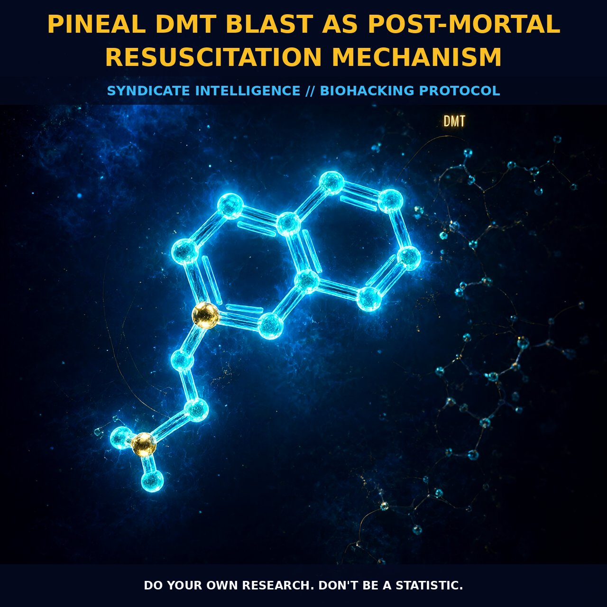

Pineal DMT Blast as Post-Mortal Resuscitation Mechanism

1. The Neurochemical Architecture of the Pineal DMT Blast
The physiological architecture of the pineal gland positions it as the central hub for endogenous N,N-dimethyltryptamine (DMT) production, anchored by high concentrations of the synthesizing enzyme indolethylamine-N-methyltransferase (INTMT). Microdialysis experiments in free-moving rodents confirm that DMT is not merely stored but actively secreted into pineal perfusates. This establishes a plausible, rapid-release pathway into the cerebrospinal fluid, allowing for immediate diffusion across the blood-brain barrier to modulate visual and auditory pathways directly.
This anatomical proximity enables a localized surge of the compound during critical physiological transitions. Rather than relying on peripheral synthesis and transport—which can be bottlenecked by tissue-specific enzyme variability—the pineal functions as a dynamic regulator. It coordinates release with broader neurological events, suggesting the gland acts as a sophisticated biochemical signal generator that maintains neural viability even during systemic stress.
2. Post-Mortal Resuscitation and Neural Patterning
The transition between life and death is theorized to be lubricated by a massive excretion of DMT at the moment of physiological termination. This 'DMT Blast' acts as a potent neuroprotectant and neuroregenerative agent, promoting brain patterning that closely resembles deep dream states through the activation of specific serotonergic receptors, particularly the 5-HT2A receptor.
By flooding the system with psychoactive quantities during the critical window of mortality, endogenous DMT may facilitate a liminal state where neural networks remain viable long after cardiac events. The compound’s ability to rapidly cross biological barriers and sequester into synaptic vesicles via the neuronal vesicle monoamine transporter supports its role as a functional neurotransmitter. This mechanism suggests that resuscitation is not just a return of heart rate, but a stabilization of conscious potential through specific receptor activation.
3. Biological Leverage and Metabolic Dynamics
The biological leverage of this mechanism lies in its capacity to influence the boundary between physical existence and perceptual reality. Research into neurodevelopment indicates that DMT biosynthesis plays a foundational role in early brain formation, with critical intervals such as forty-nine days post-conception marking the alignment of pineal development and the emergence of gender. This hints at a lifelong regulatory function where the gland fine-tunes brain receptivity.
Furthermore, the metabolic dynamics of DMT provide a framework for understanding recovery from hypoxic insults or arterial occlusive disorders. As DMT is cleared rapidly from the bloodstream—with only a small fraction recovered in urine after twenty-four hours—the system relies on efficient re-synthesis to maintain potency during heightened demand. This rapid turnover prevents over-saturation while allowing significant modulation of neural activity. Even modest total outputs can have profound local effects, allowing the pineal to function as a highly sensitive antenna that sustains higher-order cognitive processes as other physiological systems begin to fail.
4. Tactical Implementation and Kinetic Optimization
To leverage the post-mortal resuscitation potential of the pineal DMT blast, one must optimize the kinetic profile of INTMT activity. Since enzyme activity varies significantly by tissue type—being highest in organs like the lungs—supporting overall metabolic health is crucial for optimizing endogenous DMT synthesis. Maintaining adequate levels of tryptamine precursors in regions where natural concentrations might be low enhances the gland’s ability to mount a rapid response during physiological stress.
Practical observation of states associated with high DMT activity, such as deep dreaming or near-death experiences, reveals a patterned state mediated by 5-HT2A receptor activation. To support this mechanism, environmental and physiological factors influencing blood-brain barrier permeability and cerebrospinal fluid dynamics must be monitored. While exogenous dosing is well-characterized, the strategic focus should remain on supporting the enzymatic pathways rather than simply flooding the system with precursors.
Prostar Life Hack
Prioritize Lung Health & Tryptamine Precursors: To ensure your pineal gland can execute a rapid DMT blast during critical transitions, optimize lung function (where INTMT activity peaks) and maintain dietary intake of tryptamine-rich precursors. This dual approach ensures both the enzymatic engine is robust and the fuel supply is sufficient for sustained neuroprotection.
Prostar Life Hack
Prioritize Lung Health & Tryptamine Precursors: To ensure your pineal gland can execute a rapid DMT blast during critical transitions, optimize lung function (where INTMT activity peaks) and maintain dietary intake of tryptamine-rich precursors. This dual approach ensures both the enzymatic engine is robust and the fuel supply is sufficient for sustained neuroprotection.
[ AUTHOR: LEAD TECHNICAL RESEARCHER ]